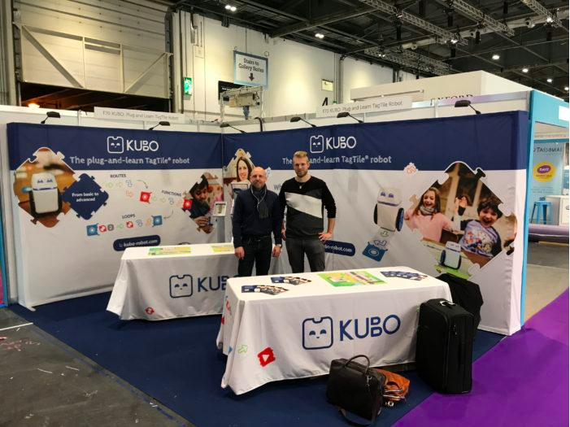

This week MOOT posted a video featuring our CEO Tommy Otzen. In the video, Tommy talks about how KUBO started as a university project with the goal of teaching kids about technology, without the use of screens or even the prerequisite of knowing how to read.
Kids spend hours every day using technology, so it’s easy to assume that they automatically have an understanding of it. However, there’s a significant difference between knowing how to use technology and actually understanding how it works.
Tommy and the rest of the KUBO team want to help children develop this understanding of technology.
Watch the video to hear Tommy talk more about this issue:
Posted 2th September 2018
We have returned home after a successful week at the BETT show.
We got to meet a lot of interesting people from all over the world and to demonstrate KUBO and all its abilities.
We would like to say a huge thank you to everyone who took the time to come by our booth and get to know KUBO. We appreciate all the constructive inputs we got from you.
We look forward to meeting a lot of you again in the future!
1/31/2018
The BETT show opens today, and we are ready to show you all the latest features of KUBO and the TagTile™ system.
At BETT, you get the chance to explore the current and future landscape of education technology. We look forward to demonstrating KUBO’s cross-curricular abilities and its physical programming language, TagTile™, to show you how they fill a gap in the market.
If you’re going to BETT, make sure to stop by booth F70 for a demonstration and a chat. We’ll be there every day until BETT closes on Saturday.
We can’t wait to see you there!
1/24/2018
The new and improved version of KUBO’s coding license is now up! We’ve gathered all the features in one place and made it easier to read and print.
KUBO’s coding license is a great first step into the world of coding for students aged 4-10. It consists of five sections that introduce concepts such as sequences, functions, subroutines, and loops. It starts at a beginner-friendly level and progressively gets harder as the students develop their understanding of programming.
In addition to introducing a foundational understanding of TagTile coding, the coding license is also designed with a holistic outlook. The sections correspond to four crucial 21st-century skills: communication, collaboration, creativity, and critical thinking, with exercises dedicated to reflect each skill.
To find the coding license, click ‘lesson plans’ in the top bar and select KUBO coding license. Start with lesson one and progress from there. Under each lesson, you get an overview of the required materials, teacher set-up and prep, management, goal and objectives. You can also find all downloadable material as well as a list of tips to help the exercises run smoothly.
Have fun exploring TagTile coding with your students and KUBO!
1/15/2018